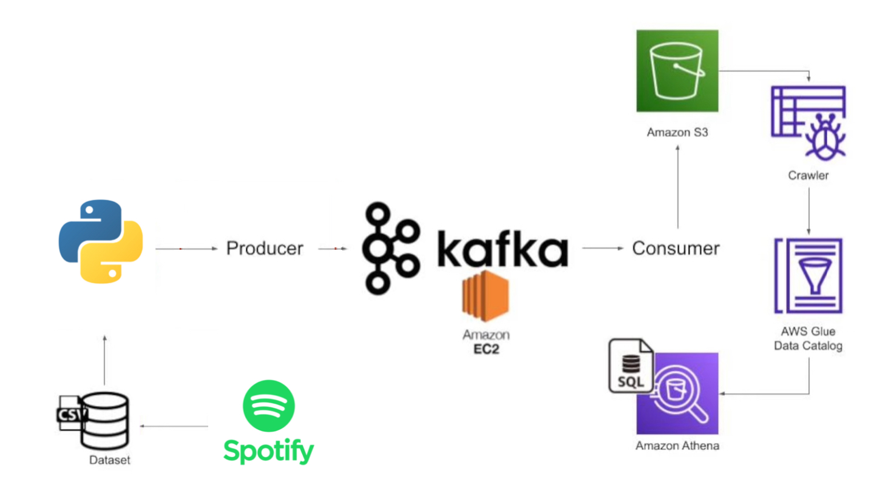
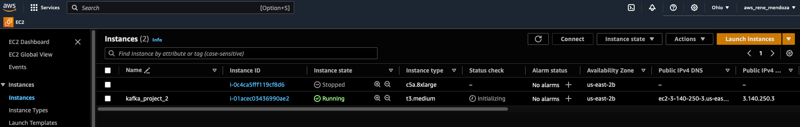
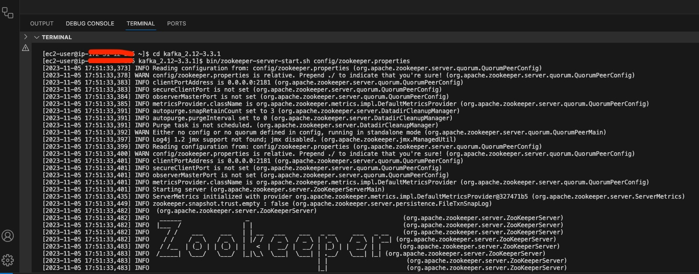
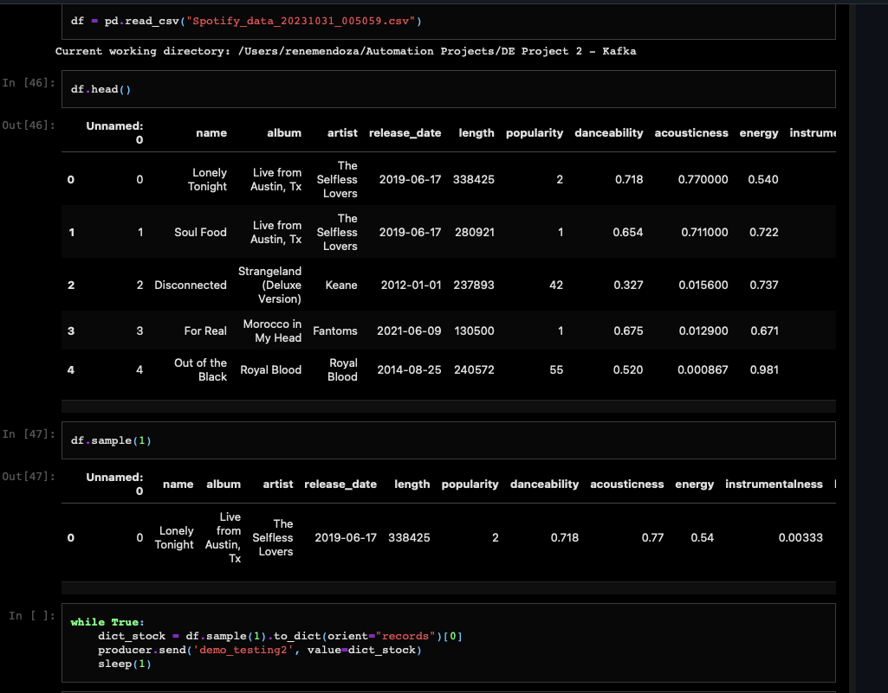

Data processing engine using Kafka
In this project, we will take Spotify data, use Python to produce that data into a Kafka cluster, then consume the data and store it into AWS using a EC2 instance inside a S3 Bucket, crawl that data to build a glue data catalog and then analyse the data using Athena.
Workflow / Tech Stack
I created this playlist to use as our datasource.

In my Airflow Project, we were able to create csv files in S3. We will utlitize that data as our data source for this project.

Create a EC2 instance in AWS, 'kafka_project_2'
Connect to EC2 via SSH Client

Setup EC2 environment, download kafka to run kafka server
Setup EC2 environment, download Java, kafka runs on top of java so we need to install java

Connect to Zookeeper server, Zookeeper helps manage the kafka cluster
Connect to Kafka server


Create topic 'demo_testing2', topics are like channels for organizing data.

Create Producer 'demo_testing2', producers are responsible for sending data to those channels.
Create Consumer 'demo_testing2', consumers read data from those channels.
Test connection 1

Create Python Script to run Kafka producer/consumer, above we were manually sending data through kafka cluster for testing/demonstration purposes, now we must setup a script so that can be automated.
After running Producer/Consumer, using the python script, test connection by pushing a few values through for testing purposes.


Now lets actually run python script as intended so it continously sends data from our spotify playist.
We are now streaming, meaning data is continously being sent in real-time between producer and consumer as shown below.
Now that we the kafka steam working, lets get this data into the cloud in a data lake.
Create data lake using AWS S3
Run Kafka Straem to add data to S3

Example of json file being created

Create Crawler which allows us to be able to query the files/data inside our data lake.
Create Database to house S3 data.

Create S3 Bucket to store Athena query objects.

Example of objects being stored, csv, metadata, etc.

In Athena, test to see if we are able to run queries based on our data.

Query data and display results

Get count of rows in data

Get count of rows in data to demonstrate kafka stream is working.
Get count of rows in data to demonstrate kafka stream is working.

Get count of rows in data to demonstrate kafka stream is working.